BÁO CÁO ĐỒ ÁN MÔN HỌC
HỆ THỐNG QUẢN TRỊ QUY TRÌNH NGHIỆP VỤ
Đề tài: HỆ THỐNG QUẢN TRỊ QUY TRÌNH NGHIỆP VỤ TẠI CÔNG TY CỔ PHẦN DƯỢC PHẨM FPT LONG CHÂU
ThS. Hà Lê Hoài Trung
Khoa Khoa học và Kỹ thuật Thông tin - UIT
Lý do chọn đề tài
Quy mô chuỗi bùng nổ
Mạng lưới nhà thuốc phủ khắp 63 tỉnh thành, áp lực vận hành đồng bộ chuỗi cung ứng, kho bãi và chuẩn GPP cực lớn.
Nghẽn giờ cao điểm
Thao tác thủ công, tra cứu kho chậm khiến khách chờ lâu; nguy cơ sai lệch tồn kho và thất thoát hàng cận hạn.
BPM & Số hóa TO-BE
Mô hình hóa chuẩn BPMN 2.0 (Cơ cấu 2-2-2), bóc tách lãng phí Lean và thiết kế mô hình TO-BE tích hợp công nghệ số.
Mục tiêu nghiên cứu
Khảo sát & Mô hình hóa
- Khảo sát cơ cấu chuỗi FPT Long Châu.
- Phân loại 10 quy trình theo 3 tầng BPM.
- Mô hình hóa 6 sơ đồ AS-IS chuẩn BPMN 2.0.
Bóc tách Điểm nghẽn
- Khoan sâu 2 khâu: Bán thuốc & Kho vận.
- Định lượng chuỗi giá trị VA / BVA / NVA.
- Tìm căn nguyên bằng 5 Whys & Xương cá 6M.
Tái thiết kế & TO-BE
- Thiết kế quy trình BPMN TO-BE tối ưu.
- 4 Đòn bẩy: Barcode/QR, FEFO, WMS, AI.
- Đánh giá tính khả thi, rủi ro & lộ trình.
Đối tượng & Phạm vi nghiên cứu
Khảo sát 10 QT, mô hình hóa 6 AS-IS, đào sâu 2 trọng điểm TO-BE.
Tổng kho trung tâm, nhà thuốc bán lẻ, khối cung ứng & IT.
Báo cáo thường niên 2023-2024 kết hợp mô phỏng học thuật chuẩn BPM.
Bộ mô hình BPMN 2.0 AS-IS & TO-BE cùng lộ trình triển khai công nghệ.
Phương pháp nghiên cứu
Báo cáo thường niên FRT, tài liệu công khai GPP và tiêu chuẩn Bộ Y tế.
Theo dõi thao tác quầy thuốc, thời gian xử lý đơn và luồng khách giờ cao điểm.
Sử dụng chuẩn OMG BPMN 2.0 trực quan hóa Swimlanes, Gateways và Events.
Bóc tách thời gian tạo giá trị (VA) và lãng phí (NVA) theo giáo trình Dumas.
Truy vết nguyên nhân gốc rễ sự cố và điểm nghẽn chuỗi cung ứng.
Ứng dụng nguyên lý BPM, công nghệ số & xây dựng lộ trình thực thi khả thi.
Ý nghĩa thực tiễn của đề tài
1. Về phương pháp luận
Minh họa thực tiễn tiếp cận BPM trong chuỗi bán lẻ dược; lượng hóa chính xác thao tác lãng phí (NVA) và nút thắt cổ chai.
2. Đề xuất số hóa thực tế
Đưa ra 4 giải pháp khả thi: Quét mã QR/Barcode, chuẩn FEFO, kết nối WMS-ERP Realtime và Dashboard điều hành thông minh.
3. Giá trị thực tiễn & Học thuật
Cung cấp bộ mô hình BPMN 2.0 TO-BE chuẩn mực và lộ trình số hóa 3 giai đoạn mang tính ứng dụng cao cho ngành bán lẻ y tế.
Bố cục báo cáo
CHƯƠNG 1: GIỚI THIỆU VỀ CÔNG TY CỔ PHẦN DƯỢC PHẨM FPT LONG CHÂU
1.1. Tổng quan về công ty
Chuỗi nhà thuốc trực thuộc Công ty Cổ phần Bán lẻ Kỹ thuật số FPT (FPT Retail - mã FRT)
Thông tin doanh nghiệp
- Tên đầy đủ: Công ty Cổ phần Dược phẩm FPT Long Châu
- Tập đoàn mẹ: FPT Retail (FRT) sở hữu >85% cổ phần
- Slogan: "Chuyên thuốc theo đơn – Cam kết giá tốt"
- Trụ sở: 379-381 Hai Bà Trưng, P. Võ Thị Sáu, Q.3, TP.HCM
Vị thế & Năng lực cạnh tranh
- Dược phẩm theo đơn: Danh mục thuốc điều trị ung thư và bệnh hiếm lớn nhất VN
- Công nghệ FPT: Tận dụng hạ tầng đám mây và hệ sinh thái CNTT từ Tập đoàn FPT
- Ứng dụng Long Châu: >10 triệu người dùng, tích hợp tra cứu và tư vấn dược sĩ 24/7
- Tiêu chuẩn: Tuân thủ nghiêm ngặt chuẩn Thực hành tốt nhà thuốc (GPP)
1.2. Lịch sử hình thành & phát triển
Hành trình chuyển mình từ hiệu thuốc gia đình đến chuỗi bán lẻ dược phẩm dẫn đầu Việt Nam
Đặt nền móng uy tín
- Khởi nguồn: Nhà thuốc gia đình tại đường Hai Bà Trưng, Quận 3, TP.HCM
- Thương hiệu: Địa chỉ tin cậy của người bệnh về thuốc kê đơn và bệnh mãn tính
- Quy mô: ~4 nhà thuốc doanh thu hàng đầu khu vực phía Nam
FPT sáp nhập & Chuẩn hóa
- 2017: FPT Retail mua lại chuỗi, đưa công nghệ vào vận hành
- Mở rộng: Nâng quy mô từ 4 lên 400 nhà thuốc trên toàn quốc
- Hệ thống: Triển khai ERP, phần mềm bán lẻ và chuẩn hóa GPP
Tăng tốc & Dẫn đầu thị trường
- Quy mô: Vượt mốc 1.800 nhà thuốc, phủ 63/63 tỉnh thành
- Vị thế: Vượt qua các đối thủ để chiếm vị trí số 1 về doanh thu
- Mở rộng: Ra mắt Trung tâm tiêm chủng và dịch vụ y tế toàn diện
1.3. Lĩnh vực hoạt động
Vận hành đồng thời 2 kênh: Bán lẻ trực tiếp tại quầy (Offline GPP) & Thương mại điện tử O2O (Website/App)
- Lợi thế độc quyền: Đầy đủ các thuốc ung thư, tim mạch, tiểu đường theo đơn bệnh viện lớn
- Chuẩn bảo quản: 100% kho bãi và nhà thuốc đạt chuẩn GSP, GDP, GPP của Bộ Y tế
- Tư vấn chuyên môn: Dược sĩ đại học hướng dẫn phác đồ điều trị tận tâm
- Đa dạng sản phẩm: Thuốc cảm cúm, tiêu hóa, giảm đau không cần kê đơn
- Nhập khẩu chính hãng: Vitamin, khoáng chất, thực phẩm bổ trợ từ Mỹ, Châu Âu, Nhật Bản
- Truy xuất nguồn gốc: 100% hóa đơn chứng từ, nói không với hàng xách tay trôi nổi
- Dược mỹ phẩm: Sản phẩm trị mụn, dưỡng da phục hồi theo chuẩn da liễu
- Thiết bị theo dõi: Máy đo huyết áp, que thử đường huyết, máy xông khí dung
- Tiêu chuẩn kiểm định: Đạt chứng nhận lưu hành an toàn từ Bộ Y tế
- Trung tâm tiêm chủng: Hệ thống tiêm vắc-xin cho trẻ em và người lớn an toàn
- Ứng dụng Long Châu: Đặt lịch tiêm, nhắc lịch uống thuốc định kỳ tự động
- Tư vấn Dược sĩ 24/7: Kênh chat và gọi video tư vấn miễn phí cho người bệnh
1.4. Cơ cấu tổ chức bộ máy
Mô hình trực tuyến - chức năng (Line-and-Staff) kết hợp quản lý chuỗi bán lẻ tập trung
HĐQT / TGĐ FPT Retail chỉ đạo chiến lược ➔ Ban Giám đốc chuỗi Long Châu trực tiếp điều hành toàn bộ kinh doanh.
- • Chuỗi cung ứng: 3 Tổng kho (Bắc - Trung - Nam) & Logistics.
- • Mạng lưới bán lẻ: Giám đốc Vùng ➔ Hơn 1.800 Nhà thuốc.
- • Nhân sự tại quầy: Dược sĩ chuyên môn, Cửa hàng trưởng, Dược sĩ tư vấn, Thu ngân & Quản lý kho.
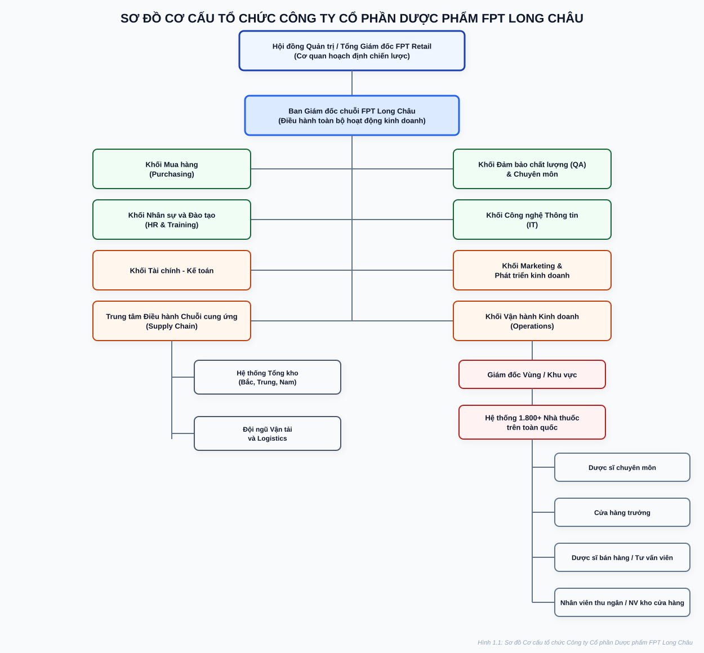
Mô hình phân cấp rõ ràng, đảm bảo tính tuân thủ pháp lý dược và khả năng mở rộng chuỗi linh hoạt
1.5. Hoạt động kinh doanh & Vị thế cạnh tranh
Động lực tăng trưởng chủ lực của FPT Retail và vị thế dẫn đầu thị trường chuỗi bán lẻ dược
Đóng góp hơn 50% doanh thu hợp nhất của toàn bộ Tập đoàn FPT Retail.
Hiệu suất kinh doanh trên từng điểm bán cao nhất toàn ngành dược phẩm.
Chuỗi dược phẩm hiếm hoi đạt lợi nhuận ròng ổn định bất chấp mở rộng nhanh.
| Tiêu chí so sánh | FPT Long Châu (Dẫn đầu) | Pharmacity | An Khang (MWG) |
|---|---|---|---|
| Số lượng cửa hàng | 1.800+ nhà thuốc | ~950 nhà thuốc | ~500 nhà thuốc |
| Thế mạnh cốt lõi | Thuốc kê đơn, ung thư, giá rẻ | Mô hình CVS, TPCN, mỹ phẩm | Cộng hưởng hệ sinh thái MWG |
| Tình trạng lợi nhuận | Có lãi ổn định | Tái cấu trúc điểm bán | Thu hẹp quy mô giảm lỗ |
1.6. Định hướng chiến lược phát triển
Tầm nhìn 2025 – 2026: Kiến tạo hệ sinh thái y tế số và chăm sóc sức khỏe toàn diện
Phủ sóng sâu rộng đến các tuyến huyện, xã và vùng nông thôn; đưa thuốc chính hãng giá tốt đến mọi người dân.
Mở rộng chuỗi Trung tâm tiêm chủng Long Châu, dịch vụ xét nghiệm nhanh và chăm sóc sức khỏe tại nhà.
Tích hợp AI hỗ trợ dược sĩ kiểm tra tương tác thuốc, tự động hóa dự báo nhu cầu hàng tồn kho và điều phối kho thông minh.
Cam kết giao thuốc nhanh dưới 30 phút; đồng bộ dữ liệu hồ sơ sức khỏe và đơn thuốc điện tử trên App di động.
CHƯƠNG 2: KHẢO SÁT, LIỆT KÊ VÀ PHÂN LOẠI QUY TRÌNH NGHIỆP VỤ
2.1. Khái quát về Quản trị Quy trình Nghiệp vụ (BPM)
Phương pháp luận quản lý hiện đại kết hợp giữa công nghệ thông tin và khoa học quản trị
Định nghĩa & Bản chất cốt lõi
Theo Dumas et al. (2018), BPM là một phương pháp quản lý toàn diện nhằm giám sát, tối ưu hóa các chuỗi hoạt động liên chức năng để tạo ra giá trị cao nhất cho khách hàng.
Vòng đời 6 bước BPM (BPM Lifecycle)
2.2. Phương pháp thực hiện và nguồn thu thập dữ liệu
Phương pháp luận khoa học: Thu thập dựa trên bằng chứng & Phỏng vấn chuyên sâu 20 câu hỏi
1. Dựa trên bằng chứng (Evidence-based)
5 Trụ cột bằng chứng2. Phỏng vấn chuyên sâu (20 câu hỏi)
Phụ lục B Báo cáo2.3. Phân loại quy trình nghiệp vụ (Mô hình Ngôi nhà BPM)
Phân loại 10 quy trình thành 3 nhóm nền tảng (Quản lý – Cốt lõi – Hỗ trợ) theo cấu trúc Ngôi nhà chuẩn quốc tế Dumas et al.
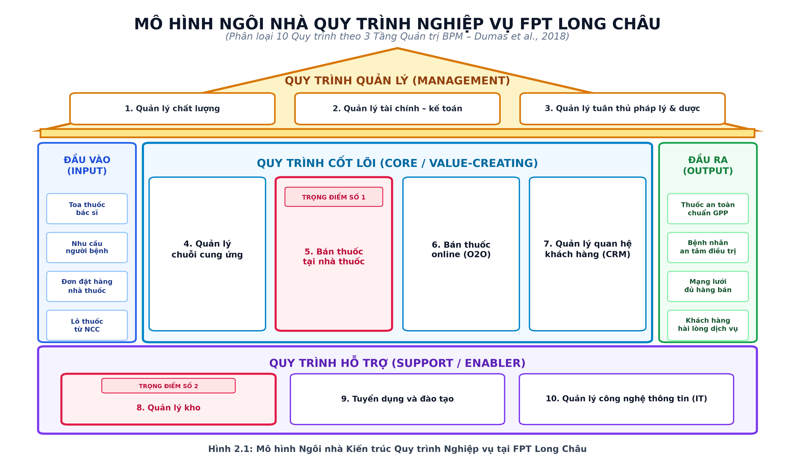
2.4. Kiến trúc quy trình nghiệp vụ của FPT Long Châu
Hệ thống 10 Sơ đồ Kiến trúc phân rã Cấp 2 (Level 2 Architecture) theo 3 tầng nghiệp vụ chuẩn BPM
Hình 2.2: Kiến trúc Quản lý chuỗi cung ứng
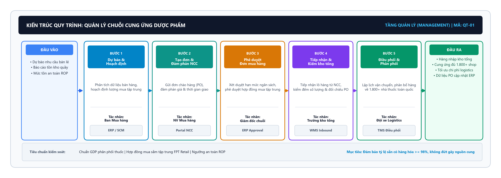
2.5. Danh sách 10 quy trình nghiệp vụ
Bảng danh mục 10 quy trình cốt lõi theo 3 tầng BPM (Bảng 2.1 Báo cáo hoàn chỉnh)
| STT | Tên quy trình nghiệp vụ | Phân tầng | Phòng ban chủ quản | Độ phức tạp | Trạng thái nghiên cứu |
|---|---|---|---|---|---|
| 01 | Quản lý chuỗi cung ứng dược phẩm | QUẢN LÝ | Ban Cung ứng & Mua hàng | Rất cao | Mô hình hóa AS-IS |
| 02 | Quản lý chất lượng dược (GPP/GDP) | QUẢN LÝ | Ban Đảm bảo Chất lượng & Dược chính | Cao | Mô hình hóa AS-IS |
| 03 | Quản lý tài chính – Kế toán | QUẢN LÝ | Ban Tài chính Kế toán FRT | Trung bình | Khảo sát tổng quan |
| 04 | Quản lý tuân thủ pháp lý & Dược | QUẢN LÝ | Ban Pháp chế doanh nghiệp | Trung bình | Khảo sát tổng quan |
| 05 | Bán thuốc tại nhà thuốc (*) | CỐT LÕI | Khối Vận hành Nhà thuốc | Cao | TRỌNG ĐIỂM SỐ 1 |
| 06 | Bán thuốc online (Omnichannel O2O) | CỐT LÕI | Trung tâm Thương mại điện tử | Cao | Mô hình hóa AS-IS |
| 07 | Dịch vụ tư vấn dược & Chăm sóc KH (CRM) | CỐT LÕI | Trung tâm CSKH & Dược sĩ tổng đài | Trung bình | Khảo sát tổng quan |
| 08 | Quản lý kho trung tâm (*) | HỖ TRỢ | Khối Kho vận & Logistics | Cao | TRỌNG ĐIỂM SỐ 2 |
| 09 | Tuyển dụng và đào tạo Dược sĩ | HỖ TRỢ | Ban Nhân sự (HR) & Học viện Đào tạo | Trung bình | Mô hình hóa AS-IS |
| 10 | Quản lý hệ thống CNTT & ERP | HỖ TRỢ | Ban Công nghệ thông tin (IT) | Cao | Khảo sát tổng quan |
2.6. Mô tả tổng quan 10 quy trình nghiệp vụ
1. Quản lý chuỗi cung ứng
2. Quản lý chất lượng
3. Bán thuốc tại nhà thuốc
4. Bán thuốc online
5. Quản lý kho
6. Tuyển dụng và đào tạo
7. Quản lý công nghệ thông tin
8. Quản lý tài chính – Kế toán
9. Quản lý quan hệ khách hàng (CRM)
10. Quản lý tuân thủ pháp lý & dược
2.7. Lựa chọn các quy trình mô phỏng & phân tích chuyên sâu
Ma trận đánh giá đa tiêu chí (MCDA) phân bổ 6 quy trình mô phỏng và 2 quy trình trọng điểm
| Quy trình nghiệp vụ | C1 | C2 | C3 | C4 | C5 | Tổng | Kết quả |
|---|---|---|---|---|---|---|---|
| 1. Bán thuốc tại nhà thuốc (*) | 4 | 5 | 5 | 4 | 5 | 23 | Trọng điểm |
| 2. Quản lý kho trung tâm (*) | 4 | 5 | 4 | 4 | 3 | 20 | Trọng điểm |
| 3. Bán thuốc Online | 5 | 5 | 5 | 5 | 4 | 24 | Chọn |
| 4. Quản lý chuỗi cung ứng | 5 | 5 | 5 | 5 | 3 | 23 | Chọn |
| 5. Tuyển dụng và đào tạo | 3 | 4 | 4 | 4 | 4 | 19 | Chọn |
| 6. Quản lý chất lượng (GPP) | 4 | 3 | 5 | 3 | 3 | 18 | Chọn |
| 7. Quản lý CNTT | 4 | 4 | 4 | 3 | 2 | 17 | Loại |
| 8. Quản lý quan hệ KH (CRM) | 3 | 4 | 4 | 4 | 2 | 17 | Loại |
| 9. Quản lý tài chính – Kế toán | 4 | 4 | 4 | 2 | 2 | 16 | Loại |
| 10. Tuân thủ pháp lý & Dược | 3 | 2 | 5 | 2 | 3 | 15 | Loại |
Mô hình hóa chuẩn BPMN 2.0 AS-IS toàn diện (Cơ cấu 2 Quản lý – 2 Cốt lõi – 2 Hỗ trợ) phân làn Swimlanes chặt chẽ.
Bán tại quầy & Quản lý kho: Phân tích định lượng VA/BVA/NVA, Lean (Chương 4) và tái thiết kế BPMN TO-BE cải tiến (Chương 5).
- • Bảo mật hệ thống (CNTT, CRM, Kế toán): Dữ liệu nằm trong CSDL nội bộ tuyệt mật của FPT Retail, khó tiếp cận thông số vận hành thực tế.
- • Đặc thù nghiệp vụ (Pháp lý & Dược): Mang tính thủ tục hành chính, chu kỳ dài, ít logic rẽ nhánh tự động hóa BPM.
CHƯƠNG 3: MÔ HÌNH HÓA QUY TRÌNH NGHIỆP VỤ HIỆN TẠI (AS-IS)
3.1. Quy trình Quản lý Chuỗi cung ứng (AS-IS)
Bổ sung hàng hóa cho hơn 1.800 nhà thuốc từ tổng kho trung tâm và mạng lưới nhà cung cấp
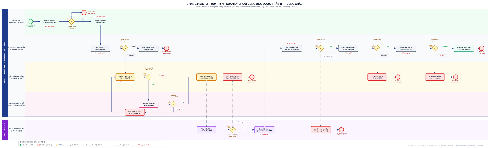
3.2. Quy trình Quản lý Chất lượng (GPP / GDP) (AS-IS)
Kiểm soát hồ sơ COA, giám sát nhiệt ẩm xe lạnh 2-8°C và cách ly thuốc lỗi
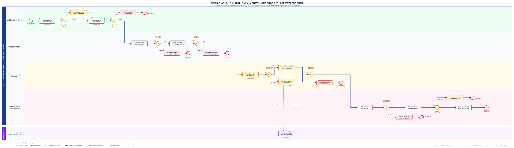
3.3. Quy trình Bán thuốc tại Nhà thuốc (AS-IS)
Quy trình huyết mạch tạo doanh thu — Phục vụ hàng triệu lượt người bệnh tại 1.800+ quầy
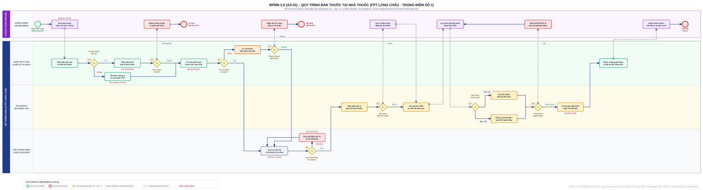
3.4. Quy trình Bán thuốc Online (Omnichannel O2O) (AS-IS)
Xử lý đơn hàng từ Website / App Long Châu, điều phối nhà thuốc gần nhất giao trong 30 phút
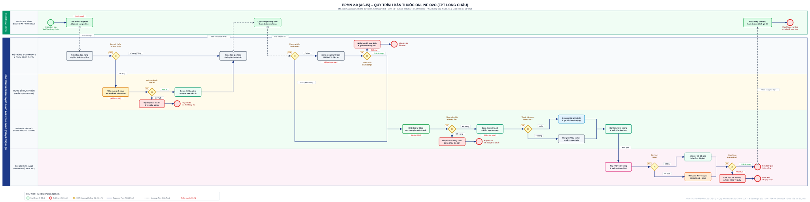
3.5. Quy trình Quản lý Kho Trung tâm (AS-IS)
Kiểm soát Nhập - Xuất - Tồn kho tổng, bảo quản chuẩn GSP và cấp phát hàng hóa cho toàn chuỗi
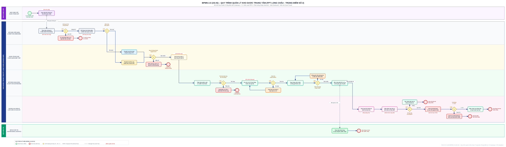
3.6. Quy trình Tuyển dụng & Đào tạo Dược sĩ (AS-IS)
Đáp ứng nhu cầu nhân sự cấp tốc cho mạng lưới mở mới hàng trăm nhà thuốc mỗi năm
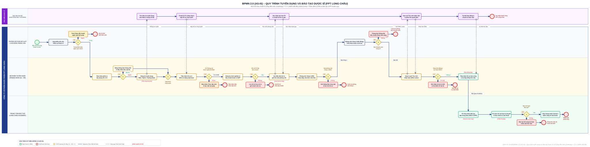
CHƯƠNG 4: PHÂN TÍCH QUY TRÌNH NGHIỆP VỤ (AS-IS)
Định lượng chuỗi giá trị (VA/BVA/NVA) • Bóc tách lãng phí Lean Move – Hold – Overdo • Nguyên nhân gốc rễ (Fishbone 6M & 5 Whys)
Tiêu chí & Phương pháp
- • 3 Tiêu chí: Tần suất, Tác động & Số hóa.
- • Khung VA/BVA/NVA: Định lượng giá trị.
- • Lean Move-Hold-Overdo: Nhận diện lãng phí.
- • 6M Fishbone & 5 Whys: Tìm căn nguyên.
Bán thuốc tại quầy
- • 4.2.1: Chuỗi giá trị (NVA: 48.2%).
- • 4.2.2: Move – Hold – Overdo.
- • 4.2.3: Fishbone 6M & Cây 5 Whys.
- • 4.2.4: Định lượng: Thời gian, CP, CL.
Quản lý kho dược
- • 4.3.1: Chuỗi giá trị (NVA: 70.6%).
- • 4.3.2: Move – Hold – Overdo.
- • 4.3.3: Fishbone 6M & Cây 5 Whys.
- • 4.3.4: Định lượng: Lệch tồn 5-8%, Hủy date.
Điểm nghẽn & TO-BE
- • Ma trận 5 vấn đề: Bảng 4.7 chi tiết.
- • 3 Nút thắt: Thông tin, Vận hành, Rủi ro HSD.
- • Mục tiêu: Làm cơ sở khoa học cho mô hình cải tiến TO-BE ở Chương 5.
4.1. TIÊU CHÍ VÀ PHƯƠNG PHÁP PHÂN TÍCH QUY TRÌNH
Chuẩn hóa phương pháp luận BPM & Lean trong đánh giá hiện trạng vận hành chuỗi bán lẻ dược phẩm
3 Tiêu chí Lựa chọn Trọng điểm
Hàng triệu lượt giao dịch mua thuốc tại quầy và luân chuyển kho liên tục mỗi ngày trên mạng lưới hơn 1.800 nhà thuốc.
Bán lẻ quầy tạo ra >80% dòng tiền trực tiếp; Quản lý kho quyết định giá vốn, mức tồn trữ an toàn và chất lượng dược phẩm.
Tiềm năng cải tiến vượt trội khi đưa vào Smart POS, Kiosk phân luồng, hệ thống WMS và máy quét mã vạch PDA.
Khung Phân loại Giá trị (VA/BVA/NVA)
Hoạt động khách hàng sẵn sàng chi trả: Dược sĩ tư vấn chuyên môn, phân tích phác đồ, cấp phát thuốc an toàn.
Không trực tiếp tạo giá trị cho khách nhưng bắt buộc theo chuẩn GPP/GSP: Thẩm định đơn thuốc, kiểm tra nhiệt độ.
Lãng phí thuần túy: Khách chờ xếp hàng, nhân viên đi tìm kệ, đếm tay thủ công, ghi sổ giấy rồi nhập lại ERP.
Phân tích Gốc rễ & Lean Move–Hold–Overdo
Phân rã đa chiều nguyên nhân: Con người (Man), Công nghệ (Machine), Quy trình (Method), Vật liệu (Material), Đo lường (Measurement), Môi trường (Mother Nature).
Truy vết liên tục qua 5 tầng nguyên nhân để bóc tách từ hiện tượng ùn ứ bề mặt đến căn nguyên hạ tầng CNTT phân mảnh.
Khoanh vùng 3 nhóm lãng phí trọng yếu: Di chuyển thừa (Move), Chờ đợi & Tồn trữ (Hold), Làm thừa & Sửa lỗi (Overdo).
4.2 & 4.3. PHÂN TÍCH QUY TRÌNH BÁN THUỐC TẠI NHÀ THUỐC & QUY TRÌNH QUẢN LÝ KHO
Bóc tách toàn diện 2 mắt xích sống còn trong chuỗi cung ứng dược phẩm FPT Long Châu: Front-end bán lẻ & Back-end hậu cần
Bán thuốc tại Nhà thuốc
Mắt xích trực tiếp tương tác với hàng trăm nghìn bệnh nhân/ngày tại hơn 1.800 cửa hàng. Chịu trách nhiệm tư vấn chuyên môn, bán thuốc kê đơn/OTC và kiểm soát nghiêm ngặt theo tiêu chuẩn GPP của Bộ Y tế.
Quản lý Kho Dược
Xương sống hậu cần tiếp nhận hàng từ nhà cung cấp (NCC), lưu trữ bảo quản chuẩn GSP, phân phối thuốc tới toàn bộ mạng lưới bán lẻ và thực hiện kiểm kê định kỳ bảo toàn nguồn vốn.
4.2.1 & 4.3.1. ĐỊNH LƯỢNG CHUỖI GIÁ TRỊ (VA / BVA / NVA)
So sánh định lượng thời gian tạo giá trị (VA) và tỷ lệ lãng phí (NVA) giữa Chu kỳ Bán lẻ và Chu kỳ Kho
4.2.2 & 4.3.2. BÓC TÁCH LÃNG PHÍ LEAN (MOVE – HOLD – OVERDO)
Nhận diện 3 nhóm lãng phí cốt lõi theo triết lý Lean trong vận hành nhà thuốc và kho trung tâm
Bán Thuốc Tại Nhà Thuốc (Bảng 4.2)
3 Nhóm Lean
• Mô tả: Dược sĩ đi lại nhiều vòng tìm thuốc (1.5') + mang khay thuốc sang quầy thu ngân riêng biệt (0.5').
• Khắc phục: Sắp xếp thuốc theo tần suất (Fast-moving); gộp quầy All-in-One tích hợp Smart POS.
• Mô tả: Khách chờ đến lượt giờ cao điểm (3.0') + POS phản hồi tra cứu chậm (1.0') + lệch tồn giữa các shop.
• Khắc phục: Kiosk lấy số hẹn giờ; App đặt trước nhận tại quầy; liên thông tồn kho Real-time toàn chuỗi.
• Mô tả: In bill giấy 100% dù khách bỏ lại; tư vấn lặp lại do thiếu CRM toa cũ; nhặt nhầm thuốc phải làm lại.
• Khắc phục: E-receipt gửi qua Zalo/App; CRM lưu hồ sơ bệnh án số; Barcode scanner khóa nhầm đơn.
Quản Lý Kho Trung Tâm (Bảng 4.5)
3 Nhóm Lean
• Mô tả: Nhân viên đi bộ 8–10 km/ngày tìm thuốc vì thiếu bản đồ; bốc dỡ qua nhiều trạm trung chuyển sàn kho.
• Khắc phục: Số hóa vị trí ô kệ (Bin Location); WMS vẽ lộ trình nhặt hàng ngắn nhất; xe nâng pallet Cross-docking.
• Mô tả: Hàng chờ ký chứng từ giấy (15–30'); thuốc cận date bị đè phía trong do không kiểm soát FEFO gây hủy hàng tỷ.
• Khắc phục: Áp dụng E-Delivery Note duyệt trước; thuật toán WMS FEFO khóa quét nếu không nhặt lô date ngắn nhất.
• Mô tả: Ghi sổ giấy rồi gõ lại vào ERP (mất 35'); duy trì thẻ kho giấy đầu kệ; đóng băng cả kho đếm tay 240 phút.
• Khắc phục: Bỏ 100% thẻ kho/sổ giấy; PDA đồng bộ ERP Real-time; kiểm kê cuốn chiếu Cycle Counting không dừng kho.
4.2.3. NGUYÊN NHÂN GỐC RỄ: FISHBONE 6M & 5 WHYS BÁN THUỐC TẠI NHÀ THUỐC
Bóc tách đa chiều 6M và truy vết cây 5 Whys ách tắc tại quầy giao dịch khách hàng (Hình 4.1)
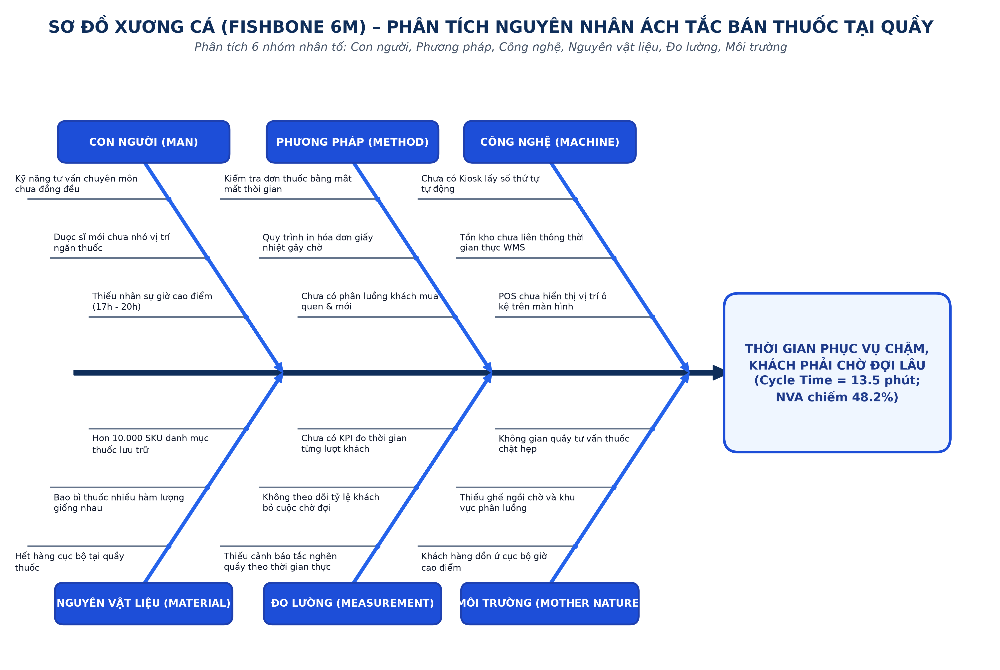
Cây 5 Whys Bán Thuốc
13.5' / kháchHạ tầng CNTT chưa được đầu tư nâng cấp thành nền tảng số tích hợp tập trung thời gian thực (Real-time Enterprise Platform) toàn chuỗi.
4.3.3. NGUYÊN NHÂN GỐC RỄ: FISHBONE 6M & 5 WHYS QUẢN LÝ KHO TRUNG TÂM
Bóc tách đa chiều 6M và truy vết cây 5 Whys thất thoát cận date & sai lệch tồn kho (Hình 4.2)
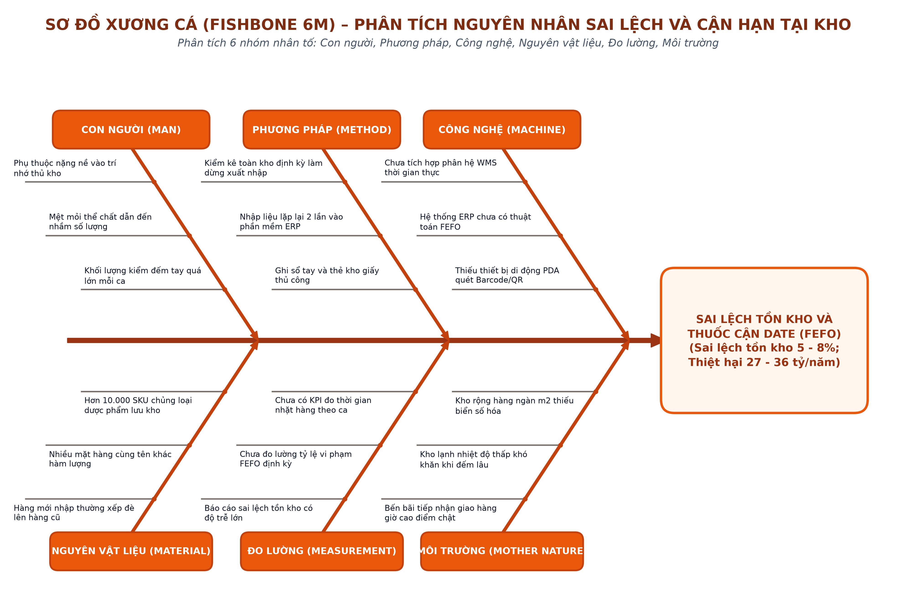
Cây 5 Whys Quản Lý Kho
Lệch tồn 5–8%Doanh nghiệp chưa đầu tư hệ thống WMS thông minh tích hợp IoT & PDA Barcode để quản lý định vị ô kệ và kiểm soát FEFO tự động.
4.2.4 & 4.3.4. PHÂN TÍCH ĐỊNH LƯỢNG: THỜI GIAN – CHI PHÍ – CHẤT LƯỢNG
Lượng hóa tổn thất vận hành trên 3 chiều cốt lõi: Năng suất thời gian, Thiệt hại tài chính và Độ chuẩn xác y tế
• Tính toán AS-IS: CT = 13.5'. VA = 6.0' (44.4%), NVA = 6.5' chiếm 48.2% (khách chờ 3', tìm thuốc 2.5', in bill 1').
• Khắc phục TO-BE: Smart POS rút CT xuống 4.5 – 5.0 phút (-63%), nâng PCE lên 75% – 80%.
• Tính toán AS-IS: CT = 510' (8.5h). NVA = 360' chiếm 70.6% (kiểm kê tay 240', đếm tay 30', tìm thuốc 40', sổ sách 35').
• Khắc phục TO-BE: PDA Barcode + FEFO rút CT xuống 140 phút (-72.5%), nâng PCE lên 85.7%.
• Tính toán AS-IS: 6.5' NVA x 80 khách x 40k/h -> Lãng phí 10.4 tr/tháng/cửa hàng -> 18.7 tỷ/tháng toàn chuỗi trả lương cho thời gian chết! Mất doanh thu: 28.8 tr/shop/tháng.
• Khắc phục: Tiết kiệm > 16.8 tỷ/tháng lương NVA.
• Tính toán AS-IS: Hủy thuốc quá hạn vi phạm FEFO thất thoát 27–36 tỷ/năm! Lương chết NVA kho: 3.6 tỷ/năm. Đóng kho kiểm kê mất 450 tr/năm.
• Khắc phục: Thuật toán FEFO bảo toàn > 25 tỷ/năm thuốc không cận date.
• Tính toán AS-IS: Tỷ lệ khách bỏ hàng vì chờ đông: 8–10%; nhặt nhầm thuốc: 1.5%; NPS trung bình: +45 điểm.
• Khắc phục: Giảm khách bỏ hàng xuống < 1%; triệt tiêu 95% nhầm thuốc; nâng NPS lên ≥ 65 điểm.
• Tính toán AS-IS: Lệch tồn kho 5–8% (500–800 SKU lệch); thuốc trôi date vi phạm FEFO: 2–3%; soạn sai thuốc: 2.5%.
• Khắc phục: Quét Barcode 100% giảm lệch tồn xuống < 0.5%; cận date giảm còn < 0.2%.
4.4. TỔNG HỢP CÁC VẤN ĐỀ VÀ ĐIỂM NGHẼN CỐT LÕI
Định vị 5 vấn đề vận hành then chốt và 3 nút thắt chiến lược – Cơ sở khoa học xây dựng mô hình TO-BE Chương 5
Ma trận Tổng hợp 5 Vấn đề Cốt lõi (Bảng 4.7)
2 Quy trình then chốt| Vấn đề nhận diện | Quy trình | Mức độ | Giải pháp ưu tiên |
|---|---|---|---|
| Khách chờ đợi lâu tại quầy | Bán lẻ tại quầy | Rất cao | Kiosk lấy số, POS thông minh |
| Nhập liệu 2 lần (Giấy & ERP) | Quản lý kho | Rất cao | Bỏ sổ giấy, quét PDA Barcode |
| Không áp dụng tự động FEFO | Quản lý kho | Rất cao | Thuật toán WMS ép xuất trước |
| Dược sĩ tìm thuốc thủ công | Bán lẻ tại quầy | Cao | Sơ đồ kho ảo hiển thị trên POS |
| Kiểm kê đếm tay đóng băng kho | Quản lý kho | Cao | Kiểm kê cuốn chiếu bằng máy PDA |
Nút thắt Thông tin (Data Silo)
Dữ liệu tồn kho giữa POS quầy và ERP phân mảnh, đồng bộ theo đợt khiến dược sĩ không tra cứu được tồn chính xác.
Nút thắt Vận hành (Manual Dependency)
Quá phụ thuộc vào trí nhớ cá nhân của thủ kho và dược sĩ; thiếu quy chuẩn sơ đồ hóa ô kệ số hóa.
Nút thắt Rủi ro Date & GPP/GSP
Không áp dụng FEFO tự động gây nguy cơ tiêu hủy thuốc cận hạn; sai lệch số liệu tồn kho thực tế lên tới 5–8%.
Giải quyết triệt để 5 vấn đề cốt lõi và 3 nút thắt chiến lược bằng Chương 5: Đề xuất cải tiến quy trình (TO-BE) với các giải pháp WMS, Kiosk và BPMN tối ưu!
CHƯƠNG 5: ĐỀ XUẤT CẢI TIẾN QUY TRÌNH NGHIỆP VỤ (TO-BE)
Chuyển dịch phương thức vận hành từ thủ công, rời rạc sang tự động hóa và đồng bộ dữ liệu thời gian thực (Real-time) tại 1.800+ nhà thuốc FPT Long Châu
Mục tiêu & KPI Đột phá
Rút ngắn 63% thời gian phục vụ, sai lệch kho < 1%, NPS 65+.
Tái thiết kế Bán thuốc & Kho
Kiosk phân luồng, POS CRM, máy quét PDA, thuật toán FEFO.
Hạ tầng Công nghệ & BPMN
WMS-ERP Cloud, OMS, AI Dashboard, mô hình BPMN 2.0 TO-BE.
So sánh AS-IS/TO-BE & Lộ trình
Bảng đối chiếu 8 tiêu chí, phân tích khả thi ROI < 2 năm, 3 giai đoạn.
5.1. Mục tiêu cải tiến & Nguyên tắc cốt lõi
Xác lập các chỉ số KPI định lượng giải quyết triệt để các lãng phí NVA đã phát hiện ở Chương 5
Rút ngắn chu kỳ bán lẻ
Thời gian phục vụ trung bình giảm từ 13.5 phút xuống còn 4.5 phút.
Giảm thiểu sai lệch kho
Tỷ lệ chênh lệch sổ sách - thực tế giảm từ 8% xuống dưới 1% nhờ Barcode/RFID.
Tuân thủ nguyên tắc FEFO
Cảnh báo tự động trước 60 ngày, triệt tiêu 100% rủi ro tồn ứ thuốc hết hạn sử dụng.
5.2. ĐỀ XUẤT CẢI TIẾN QUY TRÌNH BÁN THUỐC TẠI NHÀ THUỐC
Số hóa các điểm chạm tiếp xúc, hỗ trợ dược sĩ tư vấn và nâng tầm trải nghiệm khách hàng tại quầy (Bảng 5.1 & 5.2)
Bảng 5.1: So sánh các bước thực hiện AS-IS vs TO-BE
6 Bước cải tiến| Hoạt động AS-IS | Hoạt động TO-BE | Loại cải tiến |
|---|---|---|
| Khách xếp hàng theo cảm tính | Lấy số Kiosk / Đặt trước qua App | Tự động hóa |
| Hỏi lại tiền sử bệnh lặp lại | Quét mã QR hiện hồ sơ bệnh án CRM | Tự động hóa |
| Dược sĩ đi tìm kệ thuốc thủ công | POS chỉ định chính xác ô/kệ trên quầy | Loại bỏ NVA |
| Thu tiền mặt, in bill giấy 100% | QR Pay, e-bill tự động qua App/Zalo | Tự động hóa |
| Trừ tồn kho chậm theo batch | Tự động trừ kho Real-time sau quét mã | Đồng bộ tức thời |
| Dặn dò liều dùng bằng miệng | App tự động gửi thông báo nhắc uống thuốc | Gia tăng VA |
Phân luồng riêng cho khách lấy thuốc theo đơn có sẵn và khách cần tư vấn bệnh chuyên sâu.
Nhận diện khách hàng tức thì qua mã QR/SĐT, hiển thị lịch sử dị ứng và phác đồ điều trị.
Chỉ rõ thuốc ở dãy nào, ngăn nào giúp dược sĩ nhặt hàng trong vài giây không cần nhớ kệ.
Bảng 5.2: Hiệu quả dự kiến (KPIs) % Cải thiện
5.3. ĐỀ XUẤT CẢI TIẾN QUY TRÌNH QUẢN LÝ KHO DƯỢC
Ứng dụng công nghệ quét mã PDA, thuật toán FEFO tự động và WMS đồng bộ ERP thời gian thực (Bảng 5.3 & 5.4)
Bảng 5.3: So sánh quá trình Nhập/Xuất kho AS-IS vs TO-BE
5 Bước cải tiến| Hoạt động AS-IS | Hoạt động TO-BE | Loại cải tiến |
|---|---|---|
| Đếm hàng nhập bằng mắt thường | Dùng máy quét PDA nhận diện Barcode/QR | Tự động hóa |
| Ghi thẻ kho giấy, gõ ERP 2 lần | WMS tự động ghi vào ERP, bỏ thẻ kho giấy | Loại bỏ NVA |
| Sắp xếp phụ thuộc trí nhớ cá nhân | WMS tự động chỉ định vị trí Bin/Location | Tối ưu hóa |
| Xuất hàng ngẫu nhiên, nguy cơ cận date | Bắt buộc tuân thủ nguyên tắc FEFO tự động | Giảm lãng phí |
| Kiểm kê đếm tay, đóng băng cả kho | Cycle counting bằng PDA không dừng kho | Tự động hóa |
Mọi thao tác nhập, xuất, chuyển vị trí đều qua một lần quét PDA, cập nhật tức thì vào ERP.
Hệ thống WMS bắt buộc xuất lô thuốc có hạn dùng gần nhất trước, triệt tiêu thuốc hết hạn.
Bật cảnh báo tự động khi tồn kho dưới ngưỡng an toàn hoặc có lô thuốc sắp hết hạn trong 3-6 tháng.
Bảng 5.4: Hiệu quả dự kiến (KPIs Kho) % Cải thiện
5.4. ỨNG DỤNG 4 GIẢI PHÁP CÔNG NGHỆ HỖ TRỢ CẢI TIẾN
Kiến tạo hệ sinh thái công nghệ số hóa đồng bộ, làm đòn bẩy hiện thực hóa toàn diện mô hình quy trình TO-BE
Tự động hóa Kiểm kê
- Trang bị máy quét PDA không dây cho 100% nhân viên kho.
- Cơ chế "Scan & Match" xác thực lô/date chỉ trong 1 giây.
- Ứng dụng RFID cho thuốc giá trị cao và vắc xin bảo quản lạnh.
Đồng bộ Kho Real-time
- Tích hợp WMS với lõi ERP của FPT trên nền Cloud.
- Nguyên tắc Single Source of Truth (Một nguồn dữ liệu chuẩn).
- Bán tại quầy hay xuất kho đều trừ tồn tổng ngay lập tức.
Tối ưu Xử lý Đơn (OMS)
- Hệ thống OMS tự động xác nhận đơn online (Auto-confirm).
- Định tuyến xuất hàng từ nhà thuốc gần khách nhất có hàng.
- Kết nối API vận chuyển GHN/GHTK, tracking tự động trên App.
AI & KPI Dashboard
- AI dự báo nhu cầu bổ sung hàng (Demand Forecasting).
- Gợi ý bán kèm (Cross-sell) theo đơn thuốc tại quầy POS.
- Dashboard Power BI giám sát real-time chỉ số NPS, vòng quay kho.
5.5. MÔ HÌNH BPMN 2.0 TO-BE (ĐÃ TỐI ƯU HÓA)
Tái cấu trúc luồng công việc: Chuyển Manual Task sang Service Task, tích hợp Gateway FEFO và Message Event Real-time
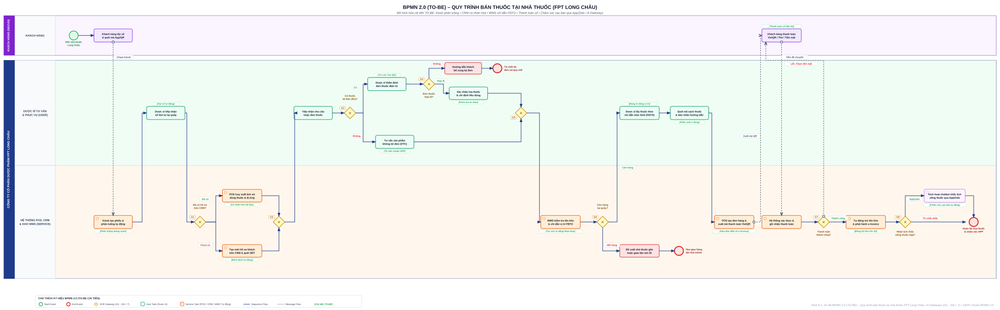
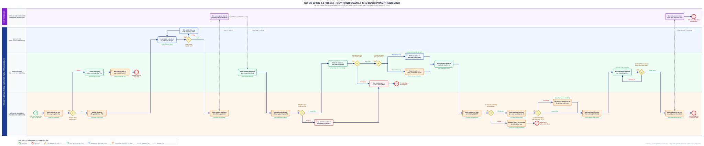
5.6. SO SÁNH TOÀN DIỆN QUY TRÌNH AS-IS VÀ TO-BE
Bảng đối chiếu tổng hợp 8 tiêu chí cốt lõi minh chứng sự vượt trội của mô hình quy trình cải tiến (Bảng 5.5)
| Tiêu chí đánh giá | Trạng thái hiện tại (AS-IS) | Trạng thái cải tiến (TO-BE) | Hiệu quả |
|---|---|---|---|
| I. QUY TRÌNH BÁN THUỐC TẠI NHÀ THUỐC (FRONT-END) | |||
| 1. Phương thức phục vụ | Chờ cảm tính, lộn xộn giờ cao điểm | Lấy số tự động Kiosk, phân luồng khách | Văn minh |
| 2. Tìm kiếm hàng hóa | Dược sĩ đi lại tìm thuốc bằng mắt thường | POS chỉ định chính xác ô/ngăn trên kệ tủ | -60% time |
| 3. Hồ sơ khách hàng | Hỏi lại từ đầu, lưu trữ rời rạc | Quét mã QR nhận diện tức thì tiền sử bệnh | CRM số |
| 4. Thanh toán & Hóa đơn | Tiền mặt, in hóa đơn giấy lãng phí | QR Pay, e-bill tự động gửi qua App/Zalo | -70% bill |
| II. QUY TRÌNH QUẢN LÝ KHO DƯỢC (BACK-END) | |||
| 5. Nhập liệu & Lưu trữ | Thẻ kho giấy, gõ nhập ERP thủ công 2 lần | Quét mã Barcode bằng PDA, đồng bộ tức thời | Bỏ sổ giấy |
| 6. Quy tắc xuất kho | Phụ thuộc trí nhớ, nhặt hàng ngẫu nhiên | Ép buộc tuân thủ nguyên tắc FEFO tự động | -90% hủy |
| 7. Kiểm soát kiểm kê | Đếm tay tốn nhiều ngày, đóng băng kho | Cycle counting bằng PDA không dừng kho | Liên tục |
| 8. Cảnh báo tự động | Dò tìm mắt thường, phát hiện muộn màng | Bot hệ thống cảnh báo tồn thấp & cận date | Chủ động |
5.7. ĐÁNH GIÁ TÍNH KHẢ THI, RỦI RO VÀ LỘ TRÌNH TRIỂN KHAI
Cơ sở luận chứng thực tiễn đảm bảo dự án cải tiến mang lại hiệu quả đầu tư và thành công bền vững (Bảng 5.6)
Được hậu thuẫn bởi tập đoàn công nghệ FPT; hạ tầng Cloud & đội ngũ dev sẵn sàng.
Tiết kiệm hàng chục tỷ tiền hủy thuốc date & tăng doanh thu quầy bù đắp chi phí đầu tư.
Dược sĩ và thủ kho trẻ tuổi, thích ứng cực nhanh với ứng dụng di động và máy quét PDA.
Sự cam kết chỉ đạo quyết liệt từ Ban Lãnh đạo FPT Retail tạo động lực số hóa toàn diện.
CHƯƠNG 6: KẾT LUẬN VÀ HƯỚNG PHÁT TRIỂN
Đánh giá toàn diện các kết quả cốt lõi, nhìn nhận khách quan hạn chế học thuật và định hình hướng đi tương lai cho hệ thống BPM tại FPT Long Châu.
5 Trụ cột Đóng góp
Khảo sát 10 QT, BPMN 2.0 AS-IS/TO-BE, phân tích Lean & Lộ trình thực thi.
Nhìn nhận Khách quan
Rào cản dữ liệu nội bộ bảo mật, thiếu thực nghiệm pilot thực tế.
Mở rộng & Nâng tầm
BPMS hoàn chỉnh, Process Mining, RPA tự động hóa & Chuỗi lạnh Vaccine.
Trải nghiệm & Thảo luận
Quét QR Web Mô phỏng & Lắng nghe ý kiến đóng góp từ Hội đồng.
6.1. KẾT QUẢ ĐẠT ĐƯỢC CỦA ĐỀ TÀI
Hoàn thành toàn diện 5 mục tiêu nghiên cứu từ Khảo sát, Mô hình hóa AS-IS, Phân tích Lean đến Tái thiết kế TO-BE & Lộ trình:
Kiến trúc 10 Quy trình
Phân loại 10 quy trình theo 3 tầng (Quản lý - Cốt lõi - Hỗ trợ). Xây dựng ma trận chọn 6 quy trình trọng điểm.
BPMN 2.0 AS-IS
Số hóa hoàn chỉnh 6 sơ đồ hiện trạng với cấu trúc Swim lane phân vai rõ ràng giữa nhân sự và hệ thống POS/ERP.
Lean & Root-Cause
Định lượng NVA (Quầy 48.2%, Kho 73.5%), chỉ rõ 7 lãng phí và truy vết gốc rễ bằng Ishikawa 6M + 5 Whys.
Tái thiết kế TO-BE
2 sơ đồ TO-BE chuẩn BPMN 2.0 tích hợp PDA, Real-time ERP, OMS và AI, rút ngắn 63% thời gian chu kỳ.
Lộ trình & Rủi ro
Vạch lộ trình 3 giai đoạn 12 tháng, ma trận kiểm soát 4 rủi ro trọng yếu, chứng minh tính khả thi với ROI < 2 năm.
6.2. NHÌN NHẬN KHÁCH QUAN HẠN CHẾ CỦA ĐỀ TÀI
Nhóm thẳng thắn chỉ ra 4 rào cản khách quan và chủ quan nhằm bảo đảm tính trung thực học thuật:
Chưa tiếp cận trực tiếp Database ERP nội bộ
Do chính sách bảo mật kinh doanh của FPT Retail, dữ liệu chu kỳ thời gian và chi phí dựa trên quan sát thực địa, phỏng vấn và mô phỏng học thuật (có thể tồn tại sai số nhất định).
Chưa triển khai Pilot ngoài thực địa
Mô hình TO-BE và giải pháp công nghệ mới dừng ở cấp độ thiết kế chuẩn và phân tích lý thuyết, chưa có điều kiện đo lường ROI và kiểm chứng thực tế tại 1 điểm bán Long Châu cụ thể.
Phân tích sâu giới hạn ở 2/6 Quy trình
Do giới hạn khung thời gian học phần, nhóm chỉ tập trung phân tích sâu Lean & 5 Whys cho 2 quy trình then chốt (Bán thuốc & Kho); 4 quy trình còn lại dừng ở mức AS-IS.
Giới hạn về dữ liệu kiểm chứng và thời gian
Do khuôn khổ đồ án môn học, một số tham số chu kỳ thời gian và chi phí dựa trên quan sát thực địa kết hợp phỏng vấn giả định, cần được kiểm chứng thêm qua số liệu vận hành thực tế dài hạn.
6.3. HƯỚNG PHÁT TRIỂN VÀ TIỀM NĂNG ỨNG DỤNG
Dựa trên kết quả và hạn chế đã chỉ ra, nhóm đề xuất 6 hướng đi chiến lược nhằm hoàn thiện và đưa giải pháp vào ứng dụng:
Tối ưu Toàn chuỗi Giá trị
Tiếp tục áp dụng Lean & 5 Whys để thiết kế TO-BE cho 4 quy trình còn lại (Mua hàng, GPP, Online, HR) đồng bộ toàn chuỗi.
Xây dựng Hệ sinh thái BPMS
Bổ sung Backend (Node.js/Spring Boot) và tích hợp Camunda Engine để xây dựng hệ thống quản trị và giao việc quy trình tự động.
Triển khai Thí điểm Pilot
Hợp tác áp dụng thử nghiệm mô hình TO-BE tại 1–2 nhà thuốc Long Châu trong 1-3 tháng, đo đạc KPI thực tế để tinh chỉnh.
Tích hợp Process Mining
Khai phá Event Logs từ ERP/POS để tự động vẽ lại quy trình thực tế và phát hiện các nút thắt cổ chai vô hình.
Tự động hóa bằng RPA
Ứng dụng bot phần mềm RPA tự động hóa các tác vụ lặp lại: nhập liệu hóa đơn đỏ, đối chiếu dữ liệu tồn kho định kỳ.
Chuỗi lạnh Vaccine & So chuẩn
Mở rộng nghiên cứu chuỗi lạnh GSP cho Trung tâm Tiêm chủng Long Châu và đối chuẩn (benchmarking) với Pharmacity, An Khang.
XIN CHÂN THÀNH CẢM ƠN!
Nhóm xin gửi lời cảm ơn chân thành và sâu sắc nhất đến ThS. Hà Lê Hoài Trung đã tận tình hướng dẫn, chỉ bảo và định hướng cho nhóm trong suốt quá trình hoàn thành đồ án môn học.
Kính mời Thầy và Hội đồng quét mã để tra cứu tài liệu và mô hình quy trình BPMN trực tuyến.
Tra cứu Hệ thống & Sơ đồ BPMN